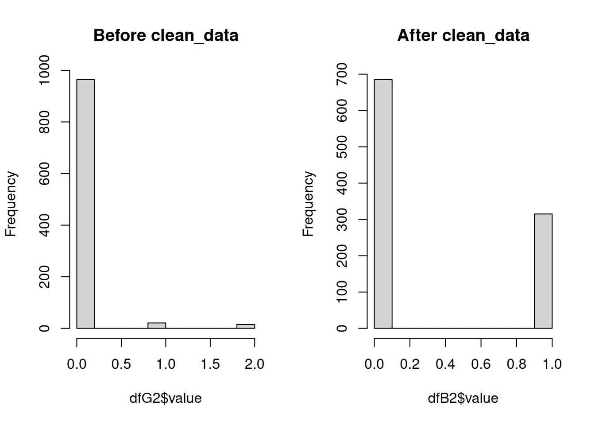

surv <- standardize_data(dataType = 'Surveys', channel = dbutils::connect_to_database(server="NEFSC_pw_oraprod",uid="KGALLAGHER"))Building & Predicting Ensemble Species Distribution Models
Overview
The first step in the CVA2.0 workflow is to build the species distribution models. These will be the basis of the exposure, directionality, and possibly additional indicators from the CVA. These are what allow the calculations to be spatially explicit and account for species habitat use.
Within this workflow, there are three steps:
- Data preparation
- Building & Predicting Species Distribution Models
- Building the Ensemble
- Predicting the Ensemble
The functions outlined below are designed to be run either sequentially or in parallel with the R parallelization method of your choice (doParallel and furrr are recommended) and can be run in loops across a list of species. Below we describe the recommended directory set up and formats for any supporting tables.
Data Preparation
Fisheries Data
The function standardize_data can be used to standardize provided csv files or pull NEFSC survey or observer data from NEFSC databases via ROracle. This can also be accomplished in R outside of the package, but standardize_data provides a single function to format data in a way that will be accepted by downstream functions. If you are pulling together data from a variety of sources, you will likely still need to manipulate data outside of this function to make sure that data are in a single csv file and that dates and times are in the correct format.
To pull NEFSC survey or observer data, a channel from the package dbutils must be provided:
To standardize CSV data, a file path to the csv file, as well as column names for station IDs; position (longitude/latitude); date; the column corresponding to the presence/absence, or count of the species; and species name.
neamap <- standardize_data(dataType = 'CSV', csv = "./Data/csvs/raw/NEAMAP_Tow_Catch_2025-08-14.csv", csvCols = c('station', 'lon', 'lat', 'date', 'present_absent', 'SCI_NAME'))This function results in a dataframe being transformed from this:
X ID TRIP_NUMBER.x HAUL_NUMBER.x AREA_FISHED SET_BEGIN_DATE SET_END_DATE
1 1 44473.1 44473 1 3674 4/11/2010 4/11/2010
2 2 44473.2 44473 2 3674 4/11/2010 4/11/2010
3 3 44473.3 44473 3 3674 4/11/2010 4/11/2010
4 4 44473.5 44473 5 3674 4/11/2010 4/11/2010
5 5 44473.5 44473 5 3674 4/11/2010 4/11/2010
6 6 44473.5 44473 5 3674 4/11/2010 4/11/2010
HAUL_BEGIN_DATE HAUL_END_DATE SET_BEGIN_LAT_CONV SET_BEGIN_LONG_CONV
1 4/11/2010 4/11/2010 36.068 -74.921
2 4/11/2010 4/11/2010 36.050 -74.909
3 4/11/2010 4/11/2010 36.042 -74.942
4 4/11/2010 4/11/2010 36.002 -74.975
5 4/11/2010 4/11/2010 36.002 -74.975
6 4/11/2010 4/11/2010 36.002 -74.975
HAUL_BEGIN_LAT_CONV HAUL_BEGIN_LONG_CONV HAUL_END_LAT_CONV HAUL_END_LONG_CONV
1 36.063 74.921 36.065 74.936
2 36.049 74.909 36.050 74.913
3 36.044 74.941 36.044 74.945
4 36.007 74.975 36.004 74.975
5 36.007 74.975 36.004 74.975
6 36.007 74.975 36.004 74.975
SET_DURATION HAUL_DURATION_HOURS GEAR_SOAK_HOURS startDate VESSEL_ID
1 0.07 0.90 3.08 2010-04-11 926397
2 0.07 0.32 0.80 2010-04-11 926397
3 0.03 0.18 0.48 2010-04-11 926397
4 0.05 0.27 0.50 2010-04-11 926397
5 0.05 0.27 0.50 2010-04-11 926397
6 0.05 0.27 0.50 2010-04-11 926397
TRIP_NUMBER.y HAUL_NUMBER.y SPECIES_NAME NUM_FISH SPECIES_ON_LIST
1 44473 1 BLUEFISH 363 1
2 44473 2 BLUEFISH 64 1
3 44473 3 BLUEFISH 7 1
4 44473 5 BLUEFISH 14 1
5 44473 5 SHARK DOGFISH SMOOTH 3 0
6 44473 5 SHARK DOGFISH SPINY 6 0To this:
X time month year towID lon lat date count
1 1 2010-04-11 4 2010 44473.1 -74.921 36.068 2010-04-11 363
2 2 2010-04-11 4 2010 44473.2 -74.909 36.050 2010-04-11 64
3 3 2010-04-11 4 2010 44473.3 -74.942 36.042 2010-04-11 7
4 4 2010-04-11 4 2010 44473.5 -74.975 36.002 2010-04-11 14
5 5 2010-04-11 4 2010 44473.5 -74.975 36.002 2010-04-11 3
6 6 2010-04-11 4 2010 44473.5 -74.975 36.002 2010-04-11 6
name
1 BLUEFISH
2 BLUEFISH
3 BLUEFISH
4 BLUEFISH
5 SHARK DOGFISH SMOOTH
6 SHARK DOGFISH SPINYTo ensure that fisheries and environmental data are on the same scale, and to convert any abundance data to presence/absence, the fisheries csvs produced by standardize_data are then converted into rasters of effort/presence/absence with the function create_rast. While the source datasets are generated for the entire dataset, one rasterStack is produced for each target species and data source. create_rast produces rasters with the same resolution as the environmental data where values range from 0 to 2, where 0 means that no effort was present in the grid cell, 1 means that there was fishing effort but the target species was not caught, and 2 indicates that the target species was caught in that grid cell.
Users must provide the standardized csv files generated by standardize_data, a link to a netcdf file that the desired grid and timesteps can be extracted from, the start date of the timeseries, and a vector of alternate names for the target species to account for any differences in species names across data sources. The user must also indicate if the data come from fisheries independent (surveys) or dependent sources (observer or logbook programs). If data come from fisheries dependent sources, then a threshold is applied before the raster is created, following McHenry et al 2019; rasters are only created if the species is present at least 30 times throughout the dataset.
rast <- create_rast(data = csv, isObs = FALSE, grid = "http://psl.noaa.gov/thredds/dodsC/Projects/CEFI/regional_mom6/cefi_portal/northwest_atlantic/full_domain/hindcast/monthly/regrid/r20250715/tob.nwa.full.hcast.monthly.regrid.r20250715.199301-202312.nc", origin = '1993-01-01', targetVec = "Atlantic cod ,ATLANTIC COD ,Gadus morhua,Cod Atlantic,GADUS MORHUA") #example to make raster for Atlantic CodThe wrapper function saveRast is provided for create_rast. This wrapper function provides logging functionality to keep track of progress, which is especially helpful if running the code in parallel, and also adds a skip functionality to skip making the raster if it already exists for that species and data source. It also saves the resulting rasterStack in the input_rasters directory within the species-specific folder in the working directory.
Here is an example of using saveRast in parallel using the package furrr with future_pmap:
plan(multisession, workers = 5)
future_pmap(list(..1 = argsList$csvName, ..2 = argsList$spp, ..3 = altNames, ..4 = argsList$skip, ..5 = argsList$isObs), ~ saveRast(csvName = ..1, spp = ..2, sppNames = ..3, skip = ..4, isObs = ..5, grid = "http://psl.noaa.gov/thredds/dodsC/Projects/CEFI/regional_mom6/cefi_portal/northwest_atlantic/full_domain/hindcast/monthly/regrid/r20230520/tob.nwa.full.hcast.monthly.regrid.r20230520.199301-201912.nc", origin = '1993-01-01'), .progress = T)
plan(sequential)Where argsList is a dataframe with a row for each desired call of saveRast, and a column associated with most arguments for saveRast and create_rast. This is generated using tidyr::expand_grid to create a dataframe of every combination of target species and data sources.
create_rast creates a seperate rasterStack for each species, which is saved to the species-specific input_rasters folder bv the saveRast wrapper function. This allows the user to examine the raster for each data source independently to ensure that it meets expectations. Before these can be matched with the environmental data, the rasters must be combined into a single rasterStack, while maintaining the 0-2 range to document presences, absences, and lack of effort. This is done with the merge_rasts and associated combineSave wrapper function. The combineSave wrapper function, in addition to providing logging and skip functionality, also automatically creates a list of raster objects in the input_rasters folder for the merge_rasts function.
combinedRasts <- merge_rasts(rasts)
#where rasts is a list of rasterStacks to combineEnvironmental Data
The example below illustrates how to grab and normalize monthly data from the Modular Ocean Model (MOM6) from the Northeast Shelf. The pull_hind and pull_forecast functions are designed to work with any MOM6 output. Other environmental data can be used as well, and normalized using the same functions, as long as the raw data is in the expected format.
The first step in getting the environmental data is pulling and spatially subsetting the raw MOM6 data. The functions provided default to pulling the entire time series of the specified model release. Functionality to subset the data by time may be added at a later date, as the length of the timeseries impacts how long the functions take the spatially subset the data.
The function pull_hind is designed to pull data from the hindcast simulations:
r <- pull_hind(jsonURL = "https://psl.noaa.gov/cefi_portal/data_index/cefi_data_indexing.Projects.CEFI.regional_mom6.cefi_portal.northwest_atlantic.full_domain.hindcast.json", reqVars = 'Bottom Temperature', shortNames = 'bottomT', release = 'r20230520', gt = 'regrid', of = 'monthly', bounds = c(-78,-65, 35,45), static = "http://psl.noaa.gov/thredds/dodsC/Projects/CEFI/regional_mom6/cefi_portal/northwest_atlantic/full_domain/hindcast/monthly/raw/r20230520/ocean_static.nc")The function ‘pull_forecast’ pulls data from the specified forecast similations:
r <- pull_forecast(jsonURL = "https://psl.noaa.gov/cefi_portal/data_index/cefi_data_indexing.Projects.CEFI.regional_mom6.cefi_portal.northwest_atlantic.full_domain.decadal_forecast.json", reqVars = 'Sea Water Potential Temperature at Sea Floor', shortNames = 'bottomT', release = 'r20250925', init = 'i202501', ens = 1, gt = 'regrid', of = 'monthly', bounds = c(-78,-65, 35,45), static = "http://psl.noaa.gov/thredds/dodsC/Projects/CEFI/regional_mom6/cefi_portal/northwest_atlantic/full_domain/hindcast/monthly/raw/r20230520/ocean_static.nc")Note that pull_forecast has the additional arguments ‘init’ and ‘ens’, which represent the initalization date and the ensemble member desired. As of October 2025, the seasonal and decadal forecasts from MOM6 include 10 ensembles with slightly different initial forcing parameters, and as a result can be averaged across ensembles if desired, whereas the long-term forecasts have ensembles that represent different projected CO2 and climate conditions.
For either function, the JSON file link can be found on the CEFI portal in the ‘Data Access’ tab. The arguments reqVars, release, gt, of, init, and ens help specify which variables to pull, at what output frequency, and what grid to pull (raw vs regrid; the latter is recommended). These need to match their corresponding columns in the JSON file exactly. See the documentation for these functions for more details.
Since spatially subsetting the data can take some time (upwards of 30 minutes per variable), if you are pulling a lot of environmental variables, it is recommended to run this command in parallel. Generally, this is not a memory-intensive activity; it just takes some time depending on the length of the timeseries (AKA the number of layers in the resulting rasterBrick). Below is an example of running the pull_hind function in parallel with DoParallel:
cluster <- makeCluster(10, type='PSOCK')
registerDoParallel(cluster)
raw <- foreach(x = 1:nrow(var.list), .packages = c("ncdf4", 'raster', 'jsonlite')) %dopar% {
r <- pull_hind(varURL = "https://psl.noaa.gov/cefi_portal/data_index/cefi_data_indexing.Projects.CEFI.regional_mom6.cefi_portal.northwest_atlantic.full_domain.hindcast.json", reqVars = var.list$Long.Name[x], shortNames = var.list$Short.Name[x], release = 'r20230520')
raw[[x]] <- r
}
stopCluster(cluster)
names(raw) <- var.list$Short.NameWhere var.list is a two column data frame with the full names of the desired variable (Long.Name) and an abbreviated variable name (Short.Name) which will eventually become the column name in the final dataframe.
Once the raw hindcast or forecast data is pulled, the workflow moving forward is the same: mean and standard deviations are calculated monthly to calculate z-scores for the complete timeseries. It is recommended to normalize the data in some way prior to building the models to help with interpretation since all the environmental data will likely have different units. We chose to normalize using a z-score to be consistent with exposure calculation methods.
# r is a list of rasterStacks of raw bottom temperature, bottom salinity, and bottom oxygen data
a <- avg_env(r) #calculate monthly average
s <- sd_env(r) #calculate monthly standard deviation
n <- norm_env(rawList = r, avgList = a, sdList = s, shortNames = c('bottomT', 'bottomS', 'bottomO2')) #calculate z-score for every time stepYou could also perform each of these steps in parallel following the example above. However, it is not really necessary since these steps are faster than the initial data pull. That being said, it is important to note that the avg_env, sd_env, and norm_env functions expect lists of rasterStacks (which would be the outcome of running pull_hind or pull_forecast in parallel as illustrated above).
Unlike other functions in this package, no wrapper function is provided. It is not shown here but the resulting lists should be stored in the ./Data/MOM6/ folder so that the data pull only needs to be performed once; it is also recommended to save the raw, mean, and standard deviations, even if they aren’t used in the models. This will allow you to 1) easily examine the raw data and 2) calculate z-scores relative to different time series if you wish to do so (for example, normalize forecast data to the present-day mean and standard deviations).
If you have static environmental data such as bathymetry or distance to shore, these should also be normalized to their respective means and standard deviations. You should create an R object that is a named list of your static variables and put it in the ./Data/MOM6/ folder. Names will correspond to the columns in the data frame if you choose to include these data in your final data frame. Cropping these rasters to the same extent as the MOM6 data is helpful for managing file size. We do not provide functions for this process as these data can come from a variety of sources.
Creating Data Frames
At this point, you should have two sets of raster files: one containing the fisheries effort/presence/absence data and another containing your environmental data. If you want to include static environmental covariates such as bathymetry, you will have a third set of raster files. While rasters are easy to plot, most of our ensemble model members do not take rasters as inputs, so these need to be converted to data frames.
The function merge_spp_env is provided to merge species and environmental rasters together, as well as add static environmental variables if provided.
df <- merge_spp_env(rastStack = combinedRasts, envData = norm, addStatic = TRUE, staticData = './Data/staticVariables_cropped_normZ.RData')
#combinedRasts is the combined rasterStack for the species created by the function 'merge_rasts'
#staticData is the path to the RData object containing a list of static environmental rasters The resulting data frame will have the following structure:
'data.frame': 100 obs. of 26 variables:
$ x : num -66.8 -66.7 -66.7 -66.6 -66.5 ...
$ y : num 45 45 45 45 45 ...
$ variable : chr "X01.1993" "X01.1993" "X01.1993" "X01.1993" ...
$ value : num 0 0 0 0 0 0 0 0 0 0 ...
$ month : num 1 1 1 1 1 1 1 1 1 1 ...
$ year : num 1993 1993 1993 1993 1993 ...
$ bottomT : num 0.182 0.179 0.178 0.172 0.17 ...
$ bottomO2 : num -0.14 -0.141 -0.147 -0.145 -0.148 ...
$ bottomS : num 0.00701 0.00852 0.01051 0.01072 0.01158 ...
$ bottomArg : num -0.000851 -0.000806 -0.000774 -0.000747 -0.000733 ...
$ surfaceT : num 0.123 0.126 0.129 0.127 0.125 ...
$ surfaceS : num -0.02366 -0.01261 -0.00579 -0.00424 -0.00458 ...
$ surfacepH : num -0.1078 -0.1075 -0.1067 -0.1008 -0.0945 ...
$ MLD : num -0.0925 -0.1174 -0.1207 -0.1069 -0.1362 ...
$ diazPP : num 0.132 0.137 0.143 0.145 0.145 ...
$ smallPP : num 0.038 0.0368 0.0471 0.0567 0.0567 ...
$ mediumPP : num -0.0751 -0.0712 -0.0546 -0.0295 -0.0275 ...
$ largePP : num -0.026092 -0.024324 -0.01777 -0.007 -0.000244 ...
$ smallZoo : num -0.0764 -0.0848 -0.1159 -0.116 -0.172 ...
$ mediumZoo : num -0.0322 -0.0385 -0.0549 -0.0562 -0.0859 ...
$ largeZoo : num 0.0372 0.0369 0.0403 0.0377 0.0361 ...
$ intNPP : num -0.043317 -0.03148 -0.016401 0.000677 0.000198 ...
$ POC : num 0.00419 -0.00173 -0.00279 -0.001 -0.00336 ...
$ bathy : num -79 -51.6 -62.6 -57.6 -69.2 ...
$ rugosity : num 0.512 1.224 0.597 0.132 0.236 ...
$ dist2coast: num 4.665 0.926 3.021 9.073 10.255 ...The ‘x’, ‘y’, ‘variable’, ‘value’, ‘month’, ‘year’ columns will always be present. ‘variable’ is equal to the name of the rasterStack layers, which should be in MM.YYYY format to pull month and year. ‘value’ is the value in the fisheries raster grid cell and should be equal to 0, 1, or 2.
Additional functions are provided to clean/simplify the data frame: match_guilds, clean_data, and remove_corr. Of these, only clean_data is required, remove_corr is recommended, and match_guilds is optional.
These could be run in any order, with the exception of if the user is utlizing the match_guilds function. This should be run prior to remove_corr if using.
Here, we will run match_guilds first. This function uses the habitat and feeding guilds keys to subset the columns in the data frame to only those relevant to the target species. For example, you may have environmental covariates from the ocean surface and sea floor, like surface and bottom temperatures. Species more associated with the sea floor, such as groundfish or flatfish, are more likely to be impacted by bottom temperatures than surface temperatures they may rarely interact with.
dfG <- match_guilds(spp_env = df, spp = c("PARALICHTHYS DENTATUS"), spp_col = 'SCI_NAME', spp_guild = 'spp_list.csv', feeding_key = 'feeding_guilds.csv', feeding_col = 'Feeding.Guild', habitat_key = 'habitat_guilds.csv', habitat_col = 'Habitat.Guild', static_vars = c('x', 'y', 'month', 'year', 'bathy', 'rugosity', 'dist2coast'), pa_col = 'value')For example, based on the habitat and feeding keys provided, the data frame for Summer flounder will be subset to the following variables:
'data.frame': 100 obs. of 15 variables:
$ x : num -66.8 -66.7 -66.7 -66.6 -66.5 ...
$ y : num 45 45 45 45 45 ...
$ value : num 0 0 0 0 0 0 0 0 0 0 ...
$ month : num 1 1 1 1 1 1 1 1 1 1 ...
$ year : num 1993 1993 1993 1993 1993 ...
$ bottomT : num 0.182 0.179 0.178 0.172 0.17 ...
$ bottomO2 : num -0.14 -0.141 -0.147 -0.145 -0.148 ...
$ bottomS : num 0.00701 0.00852 0.01051 0.01072 0.01158 ...
$ bottomArg : num -0.000851 -0.000806 -0.000774 -0.000747 -0.000733 ...
$ smallZoo : num -0.0764 -0.0848 -0.1159 -0.116 -0.172 ...
$ mediumZoo : num -0.0322 -0.0385 -0.0549 -0.0562 -0.0859 ...
$ largeZoo : num 0.0372 0.0369 0.0403 0.0377 0.0361 ...
$ bathy : num -79 -51.6 -62.6 -57.6 -69.2 ...
$ rugosity : num 0.512 1.224 0.597 0.132 0.236 ...
$ dist2coast: num 4.665 0.926 3.021 9.073 10.255 ...Next we will run clean_data to turn the data into “true” binary data. The fisheries rasters, and resulting data frames, had values ranging from 0 to 2, representing no effort (0), effort but no catch (1), and catch (2). For presence/absence modeling, the only accepted values are 0 and 1, and these models do not need to know where there was an absence of effort (while is generally good for users to know to understand the scope of the fishing effort). The function clean_data will remove all existing 0 values, and remap the presence and absence data to 1s and 0s.
dfB <- clean_data(dfG, pa_col = 'value')The histograms below illustrate how the data have been transformed.

Finally, we will run remove_corr to remove any correlated environmental covariates before building the model. Position and time (month & year) are retained.